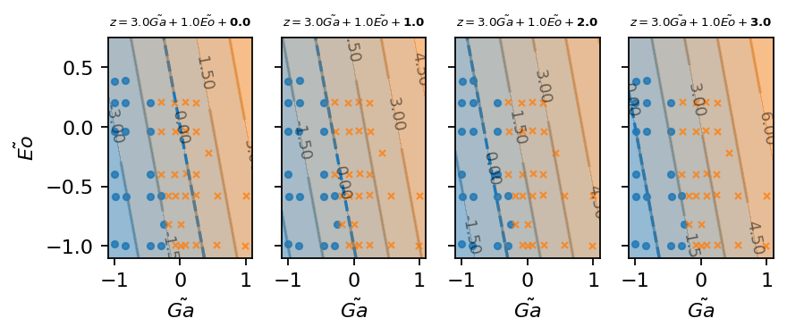
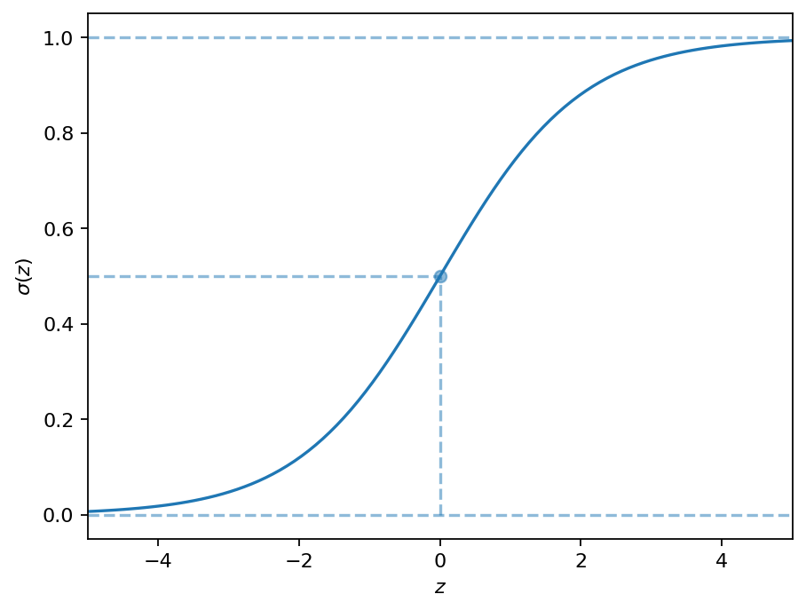
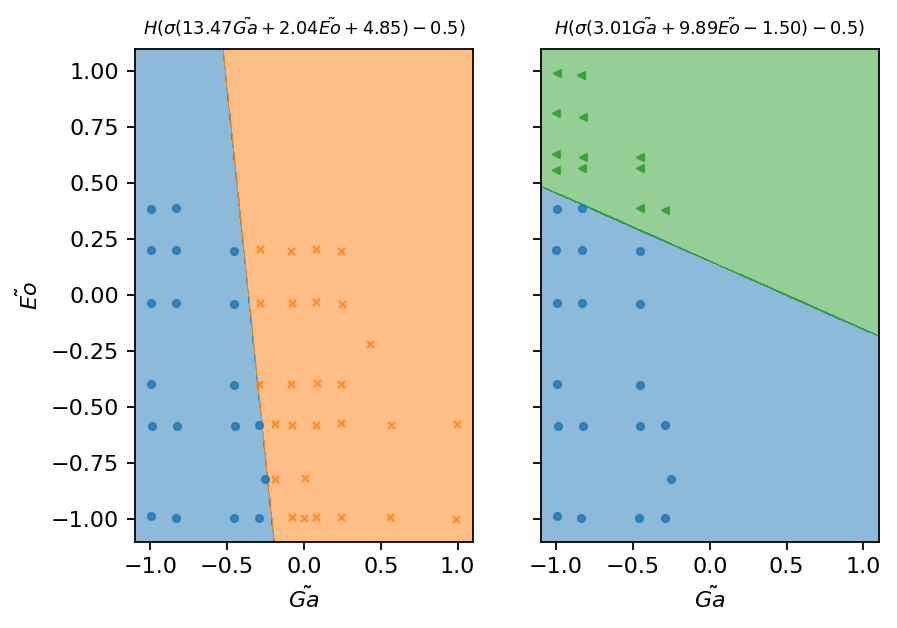

Predicting the stability regime of rising bubbles
Contents

This work is licensed under a Creative Commons Attribution 4.0 International License.
Predicting the stability regime of rising bubbles#
In this notebook, we cover the following topics:
Forces acting on a rising bubbles
Loading, inspecting, and preparing the data
Binary classification
Extension to multiple classes
from typing import List, Tuple
from os.path import join
import pandas as pd
import numpy as np
import torch as pt
import matplotlib.pyplot as plt
from matplotlib.colors import ListedColormap, LinearSegmentedColormap
from lecture_utils import train_model
# make results reproducible
pt.manual_seed(0)
# increase plot resolution
plt.rcParams["figure.dpi"] = 160
# create output directory
output = "output"
!mkdir -p $output
---------------------------------------------------------------------------
ModuleNotFoundError Traceback (most recent call last)
Cell In[1], line 5
3 import pandas as pd
4 import numpy as np
----> 5 import torch as pt
6 import matplotlib.pyplot as plt
7 from matplotlib.colors import ListedColormap, LinearSegmentedColormap
ModuleNotFoundError: No module named 'torch'
Forces acting on a rising bubble#
Loading, inspecting, and preparing the data#
data_path = "../datasets/path_shape_regimes/"
regimes = ["I", "II", "III", "IV", "V"]
raw_data_files = [f"regime_{regime}.csv" for regime in regimes]
files = [pd.read_csv(data_path + file_name, header=0, names=["Ga", "Eo"]) for file_name in raw_data_files]
for data, regime in zip(files, regimes):
data["regime"] = regime
data = pd.concat(files, ignore_index=True)
data.sample(5)
| Ga | Eo | regime | |
|---|---|---|---|
| 34 | 71.1780 | 0.49795 | II |
| 5 | 7.0927 | 0.48984 | I |
| 45 | 513.8100 | 0.50619 | II |
| 0 | 6.9759 | 10.04600 | I |
| 83 | 101.1280 | 50.20600 | V |
data.describe()
| Ga | Eo | |
|---|---|---|
| count | 103.000000 | 103.000000 |
| mean | 122.638672 | 37.759512 |
| std | 149.717655 | 58.145646 |
| min | 6.939000 | 0.099640 |
| 25% | 22.600500 | 1.000500 |
| 50% | 60.116000 | 10.046000 |
| 75% | 186.545000 | 48.188500 |
| max | 518.290000 | 212.910000 |
markers = ["o", "x", "<", ">", "*"]
for regime, marker in zip(regimes, markers):
plt.scatter(data[data["regime"] == regime].Ga, data[data["regime"] == regime].Eo,
marker=marker, label=regime)
plt.legend(loc='upper center', bbox_to_anchor=(0.5, 1.11), ncol=5)
plt.xlabel(r"$Ga$")
plt.ylabel(r"$Eo$")
plt.savefig(join(output, "ga_eo_data_raw.svg"), bbox_inches="tight")
fig, (ax1, ax2) = plt.subplots(1, 2, sharey=True)
ax1.hist(data.Ga, rwidth=0.95)
ax1.set_xlabel(r"$Ga$")
ax1.set_ylabel(r"samples")
ax2.hist(data.Eo, rwidth=0.95)
ax2.set_xlabel(r"$Eo$")
plt.savefig(join(output, "ga_eo_raw_histogram.svg"), bbox_inches="tight")
logData = data[["Ga", "Eo"]].apply(np.log10)
logData["regime"] = data["regime"].copy()
min_vals = logData[["Ga", "Eo"]].min()
max_vals = logData[["Ga", "Eo"]].max()
logData[["Ga", "Eo"]] = (logData[["Ga", "Eo"]] - min_vals) / (max_vals - min_vals)
logData[["Ga", "Eo"]] = logData[["Ga", "Eo"]] * 2.0 - 1.0
for regime, marker in zip(regimes, markers):
plt.scatter(logData[logData["regime"] == regime].Ga, logData[logData["regime"] == regime].Eo,
marker=marker, label=regime)
plt.legend(loc='upper center', bbox_to_anchor=(0.5, 1.11), ncol=5)
plt.xlabel(r"$\tilde{Ga}$")
plt.ylabel(r"$\tilde{Eo}$")
plt.savefig(join(output, "ga_eo_log.svg"), bbox_inches="tight")
fig, (ax1, ax2) = plt.subplots(1, 2, sharey=True)
ax1.hist(logData.Ga, rwidth=0.95)
ax1.set_xlabel(r"$\tilde{Ga}$")
ax1.set_ylabel(r"samples")
ax2.hist(logData.Eo, rwidth=0.95)
ax2.set_xlabel(r"$\tilde{Eo}$")
plt.savefig(join(output, "ga_eo_log_histogram.svg"), bbox_inches="tight")

Binary classification#
Manual binary classification#
def weighted_sum(logGa: pt.Tensor, logEo: pt.Tensor, p: pt.Tensor) -> pt.Tensor:
"""Compute the weighted sum of log(Ga), log(Eo), and bias.
:param logGa: common logarithm of Galilei number
:type logGa: pt.Tensor
:param logEo: common logarithm of Eötvös number
:type logEo: pt.Tensor
:param p: weight parameter
:type p: pt.Tensor
:return: weighted sum of log(Ga), log(Eo), and bias
:rtype: pt.Tensor
"""
n_samples = logGa.shape[0]
features = pt.vstack((logGa, logEo, pt.ones(n_samples))).T
return features.mv(p)
def add_markers(ax, regime_ind):
for i in regime_ind:
ax.scatter(logData[logData["regime"] == regimes[i]].Ga, logData[logData["regime"] == regimes[i]].Eo,
marker=markers[i], s=10, lw=1, c=f"C{i}", alpha=0.8)
xx, yy = pt.meshgrid(
pt.linspace(-1.1, 1.1, 500),
pt.linspace(-1.1, 0.8, 500)
)
cm = LinearSegmentedColormap.from_list("blue_to_orange", ['C0', 'C1'], 20)
fig, axarr = plt.subplots(1, 4, figsize=(6, 2), sharex=True, sharey=True)
for i, w in enumerate(pt.linspace(1, 4, 4)):
weighted_inputs = weighted_sum(xx.flatten(), yy.flatten(), pt.tensor([w, 1.0, 1.0]))
axarr[i].contourf(xx, yy, weighted_inputs.reshape(xx.shape), cmap=cm, alpha=0.5)
axarr[i].contour(xx, yy, weighted_inputs.reshape(xx.shape), levels=(0,), cmap=cm, linestyles="--", )
cont = axarr[i].contour(xx, yy, weighted_inputs.reshape(xx.shape), cmap=cm, alpha=0.5)
axarr[i].clabel(cont, fontsize=8, colors="k", fmt=lambda x: f"{x:2.2f}", inline_spacing=10, zorder=6, inline=True)
axarr[i].set_xlabel(r"$\tilde{Ga}$")
axarr[i].set_title(r"$z=\mathbf{" + f"{w:1.1f}" + r"}\tilde{Ga} + 1.0\tilde{Eo} +1.0$", fontsize=6)
add_markers(axarr[i], (0, 1))
axarr[i].set_ylim(-1.1, 0.75)
axarr[0].set_ylabel(r"$\tilde{Eo}$")
plt.savefig(join(output, "weighted_sum_ga_var.svg"), bbox_inches="tight")
fig, axarr = plt.subplots(1, 4, figsize=(6, 2), sharex=True, sharey=True)
for i, w in enumerate(pt.linspace(1.0, 4.0, 4)):
weighted_inputs = weighted_sum(xx.flatten(), yy.flatten(), pt.tensor([1.0, w, 1.0]))
axarr[i].contourf(xx, yy, weighted_inputs.reshape(xx.shape), cmap=cm, alpha=0.5)
axarr[i].contour(xx, yy, weighted_inputs.reshape(xx.shape), levels=(0,), cmap=cm, linestyles="--", )
cont = axarr[i].contour(xx, yy, weighted_inputs.reshape(xx.shape), cmap=cm, alpha=0.5)
axarr[i].clabel(cont, fontsize=8, colors="k", fmt=lambda x: f"{x:2.2f}", inline_spacing=20, zorder=6)
axarr[i].set_xlabel(r"$\tilde{Ga}$")
axarr[i].set_title(r"$z=1.0\tilde{Ga} + \mathbf{" + f"{w:1.1f}" + r"}\tilde{Eo} + 1.0$", fontsize=6)
add_markers(axarr[i], (0, 1))
axarr[i].set_ylim(-1.1, 0.75)
axarr[0].set_ylabel(r"$\tilde{Eo}$")
plt.savefig(join(output, "weighted_sum_eo_var.svg"), bbox_inches="tight")
fig, axarr = plt.subplots(1, 4, figsize=(6, 2), sharex=True, sharey=True)
for i, w in enumerate(pt.linspace(0, 3, 4)):
weighted_inputs = weighted_sum(xx.flatten(), yy.flatten(), pt.tensor([3.0, 1.0, w]))
axarr[i].contourf(xx, yy, weighted_inputs.reshape(xx.shape), cmap=cm, alpha=0.5)
axarr[i].contour(xx, yy, weighted_inputs.reshape(xx.shape), levels=(0,), cmap=cm, linestyles="--", )
cont = axarr[i].contour(xx, yy, weighted_inputs.reshape(xx.shape), cmap=cm, alpha=0.5)
axarr[i].clabel(cont, fontsize=8, colors="k", fmt=lambda x: f"{x:2.2f}", inline_spacing=20, zorder=6)
axarr[i].set_xlabel(r"$\tilde{Ga}$")
axarr[i].set_title(r"$z=3.0\tilde{Ga} + 1.0\tilde{Eo} + \mathbf{" + f"{w:1.1f}" + r"}$", fontsize=6)
add_markers(axarr[i], (0, 1))
axarr[i].set_ylim(-1.1, 0.75)
axarr[0].set_ylabel(r"$\tilde{Eo}$")
plt.savefig(join(output, "weighted_sum_bias_var.svg"), bbox_inches="tight")

fig, axarr = plt.subplots(1, 4, figsize=(6, 2), sharex=True, sharey=True)
for i, w in enumerate(pt.linspace(0, 3, 4)):
weighted_inputs = weighted_sum(xx.flatten(), yy.flatten(), pt.tensor([3.0, 1.0, w]))
prediction = pt.heaviside(weighted_inputs, pt.tensor(0.0))
axarr[i].contourf(xx, yy, prediction.reshape(xx.shape), cmap=ListedColormap(['C0', 'C1']), alpha=0.5)
axarr[i].set_xlabel(r"$\tilde{Ga}$")
axarr[i].set_title(r"$z=3.0 \tilde{Ga} + 1.0\tilde{Eo} + \mathbf{" + f"{w:1.1f}" + "}$", fontsize=6)
add_markers(axarr[i], (0, 1))
axarr[i].set_ylim(-1.1, 0.75)
axarr[0].set_ylabel(r"$\tilde{Eo}$")
plt.savefig(join(output, "heaviside_prediction.svg"), bbox_inches="tight")
class Perceptron(object):
"""Implements perceptron algorithm and learning rule.
"""
def __init__(self, n_weights: int):
"""Initialize perceptron instance.
:param n_weights: number of free parameters; must be
equal to the number of features
:type n_weights: int
"""
self._p = pt.rand(n_weights)*2.0 - 1.0
def _loss(self, X: pt.Tensor, y: pt.Tensor) -> pt.Tensor:
return 0.5 * pt.sum((y - self.predict(X))**2)
def _loss_gradient(self, X: pt.Tensor, y: pt.Tensor) -> pt.Tensor:
delta = y - self.predict(X)
return -pt.cat((X, pt.ones(X.shape[0]).unsqueeze(-1)), dim=-1).T.mv(delta)
def train(self, X: pt.Tensor, y: pt.Tensor, epochs: int=500,
lr: float=0.01, tol: float=1.0e-6) -> List[float]:
loss = []
for e in range(epochs):
self._p -= lr*self._loss_gradient(X, y)
loss.append(self._loss(X, y).item())
if loss[-1] < tol:
print(f"Converged after {e+1} epochs.")
return loss
print(f"Training did not converge within {epochs} epochs")
print(f"Final loss: {loss[-1]:2.3f}")
return loss
def predict(self, X: pt.Tensor):
"""Make binary prediction.
:param X: feature tensor; the first dimension is assumed
to be the batch dimension
:type X: pt.Tensor
"""
weighted_sum = X.mv(self._p[:-1]) + self._p[-1]
return pt.heaviside(weighted_sum, pt.tensor(0.0))
one_two = (logData.regime == "I") | (logData.regime == "II")
features = pt.tensor(logData[one_two][["Ga", "Eo"]].values).type(pt.float32)
logData["ordinal"] = 0.0
for i, r in enumerate(regimes):
logData.ordinal.mask(logData.regime == r, float(i), inplace=True)
label = pt.tensor(logData.ordinal[one_two].values).type(pt.float32)
perceptron = Perceptron(3)
loss = perceptron.train(features, label)
p = perceptron._p
print(f"Final equations: z={p[0]:2.3f}Ga{p[1]:+2.3f}Eo{p[2]:+2.3f}")
Converged after 30 epochs.
Final equations: z=0.288Ga+0.059Eo+0.117
plt.plot(range(1, len(loss)+1), loss)
plt.xlabel("epoch")
plt.ylabel("miss-classified points")
plt.xlim(1.0, len(loss)+1)
plt.axhline(0.0, 0.0, 1.0, ls=":", c="k")
plt.yticks(pt.linspace(0.0, 17, 18))
plt.savefig(join(output, "perceptron_loss.svg"), bbox_inches="tight")
fig, (ax1, ax2) = plt.subplots(1, 2, figsize=(6, 3), sharex=True, sharey=True)
weighted_inputs = weighted_sum(xx.flatten(), yy.flatten(), perceptron._p)
prediction = perceptron.predict(pt.stack((xx.flatten(), yy.flatten())).T)
ax1.contourf(xx, yy, weighted_inputs.reshape(xx.shape), cmap=cm, alpha=0.5)
cont = ax1.contour(xx, yy, weighted_inputs.reshape(xx.shape), cmap=cm, alpha=0.5)
ax1.clabel(cont, fontsize=8, colors="k", fmt=lambda x: f"{x:2.2f}", inline_spacing=5, zorder=6)
ax2.contourf(xx, yy, prediction.reshape(xx.shape), cmap=ListedColormap(['C0', 'C1']), alpha=0.5)
for ax in (ax1, ax2):
ax.set_xlabel(r"$\tilde{Ga}$")
add_markers(ax, (0, 1))
ax1.set_ylabel(r"$\tilde{Eo}$")
p = perceptron._p
ax1.set_title(r"$z=" + f"{p[0]:1.2f}" + r"\tilde{Ga}" + f"{p[1]:+1.2f}" + r"\tilde{Eo}" + f"{p[2]:+1.2f}" + r"$")
ax2.set_title(r"$H(z(\tilde{Ga} , \tilde{Eo}))$")
plt.savefig(join(output, "perceptron_prediction.svg"), bbox_inches="tight")
z = pt.linspace(-5, 5, 100)
plt.plot(z, pt.sigmoid(z))
plt.scatter([0.0], [0.5], marker="o", alpha=0.5)
plt.vlines(0.0, 0.0, 0.5, "C0", "--", alpha=0.5)
plt.hlines([0.0, 0.5, 1.0], [-5, -5, -5], [5, 0, 5], "C0", "--", alpha=0.5)
plt.xlim(-5, 5)
plt.ylim(-0.05, 1.05)
plt.xlabel(r"$z$")
plt.ylabel(r"$\sigma (z)$")
plt.savefig(join(output, "sigmoid_prob.svg"), bbox_inches="tight")

fig, (ax1, ax2) = plt.subplots(1, 2, figsize=(6, 4), sharex=True, sharey=True)
weighted_inputs = weighted_sum(xx.flatten(), yy.flatten(), perceptron._p)
probs = pt.sigmoid(weighted_inputs)
ax1.contourf(xx, yy, weighted_inputs.reshape(xx.shape), cmap=cm, alpha=0.5)
cont = ax1.contour(xx, yy, weighted_inputs.reshape(xx.shape), cmap=cm, alpha=0.5)
ax1.clabel(cont, fontsize=8, colors="k", fmt=lambda x: f"{x:2.2f}", inline_spacing=5, zorder=6)
ax2.contourf(xx, yy, probs.reshape(xx.shape), cmap=cm, alpha=0.5)
cont = ax2.contour(xx, yy, probs.reshape(xx.shape), cmap=cm, alpha=0.5)
ax2.clabel(cont, fontsize=8, colors="k", fmt=lambda x: f"{x:2.2f}", inline_spacing=5, zorder=6)
for ax in (ax1, ax2):
ax.set_xlabel(r"$\tilde{Ga}$")
add_markers(ax, (0, 1))
ax1.set_ylabel(r"$\tilde{Eo}$")
p = perceptron._p
ax1.set_title(r"$z=" + f"{p[0]:1.2f}" + r"\tilde{Ga}" + f"{p[1]:+1.2f}" + r"\tilde{Eo}" + f"{p[2]:+1.2f}" + r"$")
ax2.set_title(r"$\sigma(z(\tilde{Ga} , \tilde{Eo}))$")
plt.savefig(join(output, "binary_probabilities.svg"), bbox_inches="tight")
class LogisticRegression(object):
"""Implementation of logistic regresion.
"""
def __init__(self, n_weights):
self._p = pt.rand(n_weights)*2.0 - 1.0
def _joint_probability(self, X: pt.Tensor, y: pt.Tensor) -> pt.Tensor:
probs = self.probability(X)
joint = pt.pow(probs, y) * pt.pow(1.0-probs, 1-y)
return pt.prod(joint)
def _loss(self, X: pt.Tensor, y: pt.Tensor) -> pt.Tensor:
probs = self.probability(X)
entropy = y*pt.log(probs+1.0e-6) + (1-y)*pt.log(1.0-probs+1.0e-6)
return -entropy.mean()
def _loss_gradient(self, X: pt.Tensor, y: pt.Tensor) -> pt.Tensor:
delta = y - self.probability(X)
grad = pt.cat((X, pt.ones(X.shape[0]).unsqueeze(-1)), dim=-1) * delta.unsqueeze(-1)
return -grad.mean(dim=0)
def train(self, X: pt.Tensor, y: pt.Tensor, epochs: int=10000,
lr: float=1.0, tol: float=0.1) -> List[float]:
loss = []
for e in range(epochs):
self._p -= lr*self._loss_gradient(X, y)
loss.append(self._loss(X, y).item())
if loss[-1] < tol:
print(f"Converged after {e+1} epochs.")
return loss
print(f"Training did not converge within {epochs} epochs")
print(f"Final loss: {loss[-1]:2.3f}")
return loss
def probability(self, X: pt.Tensor) -> pt.Tensor:
weighted_sum = X.mv(self._p[:-1]) + self._p[-1]
return pt.sigmoid(weighted_sum)
def predict(self, X: pt.Tensor) -> pt.Tensor:
return pt.heaviside(self.probability(X)-0.5, pt.tensor(0.0))
log_regressor = LogisticRegression(3)
loss = log_regressor.train(features, label, lr=0.5)
p = log_regressor._p
print(f"Weighted sum: z={p[0]:2.3f}Ga{p[1]:+2.3f}Eo{p[2]:+2.3f}")
Converged after 1883 epochs.
Weighted sum: z=13.473Ga+2.037Eo+4.854
plt.plot(range(1, len(loss)+1), loss)
plt.xlabel("epoch")
plt.ylabel("binary cross entropy")
plt.xlim(1.0, len(loss)+1)
plt.axhline(0.1, 0.0, 1.0, ls=":", c="k")
plt.savefig(join(output, "log_regression_loss.svg"), bbox_inches="tight")
fig, (ax1, ax2) = plt.subplots(1, 2, figsize=(6, 4), sharex=True, sharey=True)
probs = log_regressor.probability(pt.stack((xx.flatten(), yy.flatten())).T)
prediction = log_regressor.predict(pt.stack((xx.flatten(), yy.flatten())).T)
ax1.contourf(xx, yy, probs.reshape(xx.shape), cmap=cm, alpha=0.5)
cont = ax1.contour(xx, yy, probs.reshape(xx.shape), cmap=cm, alpha=0.5)
ax1.clabel(cont, fontsize=8, colors="k", fmt=lambda x: f"{x:2.2f}", inline_spacing=5, zorder=6)
ax2.contourf(xx, yy, prediction.reshape(xx.shape), cmap=ListedColormap(['C0', 'C1']), alpha=0.5)
for ax in (ax1, ax2):
ax.set_xlabel(r"$\tilde{Ga}$")
add_markers(ax, (0, 1))
ax1.set_ylabel(r"$\tilde{Eo}$")
ax1.set_title(r"$p_1=\sigma (" + f"{p[0]:1.2f}" + r"\tilde{Ga}" + f"{p[1]:+1.2f}" + r"\tilde{Eo}" + f"{p[2]:+1.2f}" + r")$", fontsize=8)
ax2.set_title(r"$H(p(\tilde{Ga} , \tilde{Eo})-0.5)$", fontsize=8)
plt.savefig(join(output, "log_regression_prediction.svg"), bbox_inches="tight")
weights = log_regressor._p
Nw = 100
w1 = pt.linspace(weights[0]-4.0, weights[0]+8, Nw)
w2 = pt.linspace(weights[1]-6.0, weights[1]+6, Nw)
w11, w22 = pt.meshgrid(w1, w2)
entropy = pt.zeros_like(w11)
joint_p = pt.zeros_like(w11)
model = LogisticRegression(3)
model._p[2] = weights[2]
for i in range(Nw):
for j in range(Nw):
model._p[:-1] = pt.tensor([w11[i, j], w22[i, j]])
entropy[i, j] = model._loss(features, label)
joint_p[i, j] = model._joint_probability(features, label)
fig, (ax1, ax2) = plt.subplots(1, 2, figsize=(6, 4), sharex=True, sharey=True)
cont1 = ax1.contourf(w11, w22, entropy, levels=pt.linspace(0.0, 0.7, 20))
cont2 = ax2.contourf(w11, w22, joint_p, levels=pt.linspace(0.0, 0.014, 20))
cbar = plt.colorbar(cont1, ax=ax1, orientation="horizontal")
cbar.set_ticks([0.0, 0.35, 0.7])
cbar = plt.colorbar(cont2, ax=ax2, orientation="horizontal")
cbar.set_ticks([0.0, 0.007, 0.014])
for ax in (ax1, ax2):
ax.set_xlabel(r"$w_1$")
ax.set_aspect("equal")
ax1.set_ylabel(r"$w_2$")
ax1.set_title("binary cross entropy")
ax2.set_title("joint probability")
plt.savefig(join(output, "entropy_loss_landscape.svg"), bbox_inches="tight")
one_three = (logData.regime == "I") | (logData.regime == "III")
features_I_II = pt.tensor(logData[one_two][["Ga", "Eo"]].values).type(pt.float32)
features_I_III = pt.tensor(logData[one_three][["Ga", "Eo"]].values).type(pt.float32)
label_I_II = pt.tensor(logData.ordinal[one_two].values).type(pt.float32)
label_I_III = pt.tensor(logData.ordinal[one_three].values).type(pt.float32)
label_I_III.clamp_(0.0, 1.0)
tensor([0., 0., 0., 0., 0., 0., 0., 0., 0., 0., 0., 0., 0., 0., 0., 0., 0., 0.,
0., 1., 1., 1., 1., 1., 1., 1., 1., 1., 1., 1., 1.])
model_I_II = LogisticRegression(3)
model_I_III = LogisticRegression(3)
_ = model_I_II.train(features_I_II, label_I_II)
_ = model_I_III.train(features_I_III, label_I_III)
print("Weights model I-II: ", model_I_II._p)
print("Weights model I-III: ", model_I_III._p)
Converged after 937 epochs.
Converged after 424 epochs.
Weights model I-II: tensor([13.4738, 2.0377, 4.8539])
Weights model I-III: tensor([ 3.0062, 9.8874, -1.5003])
xx, yy = pt.meshgrid(
pt.linspace(-1.1, 1.1, 500),
pt.linspace(-1.1, 1.1, 500)
)
fig, axarr = plt.subplots(1, 2, figsize=(6, 4), sharex=True, sharey=True)
for i, model in enumerate((model_I_II, model_I_III)):
prediction = model.predict(pt.stack((xx.flatten(), yy.flatten())).T)
axarr[i].contourf(xx, yy, prediction.reshape(xx.shape), cmap=ListedColormap(["C0", f"C{i+1}"]), alpha=0.5)
axarr[i].set_xlabel(r"$\tilde{Ga}$")
add_markers(axarr[i], (0, i+1))
axarr[0].set_ylabel(r"$\tilde{Eo}$")
p1, p2 = model_I_II._p, model_I_III._p
axarr[0].set_title(r"$H(\sigma(" + f"{p1[0]:1.2f}" + r"\tilde{Ga}" + f"{p1[1]:+1.2f}" + r"\tilde{Eo}" f"{p1[2]:+1.2f}" + r") - 0.5)$", fontsize=8)
axarr[1].set_title(r"$H(\sigma(" + f"{p2[0]:1.2f}" + r"\tilde{Ga}" + f"{p2[1]:+1.2f}" + r"\tilde{Eo}" f"{p2[2]:+1.2f}" + r") - 0.5)$", fontsize=8)
plt.savefig(join(output, "log_regression_I_II_II.svg"), bbox_inches="tight")

combined_prob = pt.sigmoid(
0.9*model_I_II.probability(pt.stack((xx.flatten(), yy.flatten())).T)
+ 0.9*model_I_III.probability(pt.stack((xx.flatten(), yy.flatten())).T)
- 0.5
)
combined_prediction = pt.heaviside(combined_prob - 0.5, pt.tensor(0.0))
fig, (ax1, ax2) = plt.subplots(1, 2, figsize=(6, 4), sharex=True, sharey=True)
ax1.contourf(xx, yy, combined_prob.reshape(xx.shape), cmap=cm, alpha=0.5)
cont = ax1.contour(xx, yy, combined_prob.reshape(xx.shape), cmap=cm, alpha=0.5)
ax1.clabel(cont, fontsize=8, colors="k", fmt=lambda x: f"{x:2.2f}", inline_spacing=5, zorder=6)
ax2.contourf(xx, yy, combined_prediction.reshape(xx.shape), cmap=ListedColormap(['C0', 'C1']), alpha=0.5)
for ax in (ax1, ax2):
ax.set_xlabel(r"$\tilde{Ga}$")
add_markers(ax, (0, 1, 2))
ax1.set_ylabel(r"$\tilde{Eo}$")
ax1.set_title(r"$p(II\vee III | \tilde{Ga}, \tilde{Eo})=\sigma(0.9p_{II}+0.9p_{III}-0.5)$", fontsize=8)
ax2.set_title(r"$H(p(II\vee III | \tilde{Ga}, \tilde{Eo})-0.5)$", fontsize=8)
plt.savefig(join(output, "log_combined_prob.svg"), bbox_inches="tight")
Extension to multiple classes#
n_features, n_classes, n_neurons = 2, 5, 50
regime_model = pt.nn.Sequential(
pt.nn.Linear(n_features, n_neurons),
pt.nn.Tanh(),
pt.nn.Linear(n_neurons, n_neurons),
pt.nn.Tanh(),
pt.nn.Linear(n_neurons, n_classes)
)
optimizer = pt.optim.AdamW(regime_model.parameters(), lr=0.001)
dataset = pt.utils.data.TensorDataset(
pt.tensor(logData[["Ga", "Eo"]].values, dtype=pt.float32),
pt.tensor(logData.ordinal.values, dtype=pt.int64)
)
train_size = int(0.9*len(dataset))
val_size = len(dataset) - train_size
train_dataset, val_dataset = pt.utils.data.random_split(dataset, (train_size, val_size))
train_loader = pt.utils.data.DataLoader(train_dataset, batch_size=len(train_dataset), shuffle=True)
val_loader = pt.utils.data.DataLoader(val_dataset, batch_size=len(val_dataset))
results = train_model(regime_model, pt.nn.CrossEntropyLoss(), train_loader, val_loader,
epochs=1000, optimizer=optimizer)
Epoch 999/999 - Training loss: 1.163685e-01; Validation loss: 1.146673e-02
plt.plot(results["epoch"], results["train_loss"], label="training")
plt.plot(results["epoch"], results["val_loss"], label="validation")
plt.xlabel("epoch")
plt.ylabel("categorical cross entropy")
plt.legend()
plt.xlim(0, 1000)
plt.savefig(join(output, "network_classification_loss.svg"), bbox_inches="tight")
xx, yy = pt.meshgrid(
pt.linspace(-1.1, 1.1, 500),
pt.linspace(-1.1, 1.1, 500)
)
X = pt.stack((xx.flatten(), yy.flatten())).T
prob = pt.nn.functional.softmax(regime_model(X), dim=1)
prediction = pt.argmax(prob, dim=1) + 0.01
fig, ax = plt.subplots()
cmap = ListedColormap([f"C{i}" for i in range(5)])
ax.contourf(xx, yy, prediction.reshape(xx.shape), cmap=cmap, alpha=0.5)
for regime, marker in zip(regimes, markers):
ax.scatter(logData[logData["regime"] == regime].Ga, logData[logData["regime"] == regime].Eo,
marker=marker, s=10, label="regime {}".format(regime))
ax.set_xlabel(r"$\tilde{Ga}$")
ax.set_ylabel(r"$\tilde{Eo}$")
ax.legend(loc='upper center', bbox_to_anchor=(0.5, 1.1), ncol=5, fontsize=8)
plt.savefig(join(output, "network_multiclass_prediction.svg"), bbox_inches="tight")